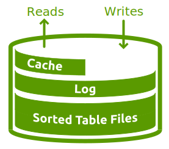

JavaScript Databases II
Max Ogden - "JavaScript Databases" - LXJS 2012
"I want to see a time where I can write a persistence function that can run in Node, the browser and anywhere else JavaScript runs."
So what is a Database?
A tool for interacting with structured data, externalised from the core of our application
- Persistence
- Performance
- Simplify access to complex data
Optional extras...
- Shared access
- Scalability
The Node Way™
Applied to databases?
Small core, vibrant user-land
Small core: LevelUP
Extreme modularity
Everything as a module
Everything in JavaScript!
Reimplementing database practice & theory
Inspired by LevelDB
- Open-source, embedded key/value store by Google
- Entries sorted by keys
- Basic operations:
Get(), Put(), Del() - Atomic
Batch() - Bi-directional iterators
LevelDB: basic architecture
Log Structured Merge Tree (LSM) 
- Writes go straight into a log
- Log is flushed string sorted table (SST) files
- SST files grow into a hierarchy of overlapping "levels"
- Reads merge the log and the level / SST data
- Cache speeds up common reads
LevelUP: Database primitives
- Open / Close
- Get
- Put
- Del
- Batch
- ReadStream
Primitives: ReadStream
The simplest form of a query mechanism
Basic range query:
| a | b | e | f1 | f2 | g | h | i | o | p | q | r | v |
↑ 'e' → 'h' ↑
╰─────────────────╯
Primitives: ReadStream
The simplest form of a query mechanism
Basic range query:
| a | b | e | f1 | f2 | g | h | i | o | p | q | r | v |
↑ 'e' → 'h' ↑
╰─────────────────╯
db.createReadStream({ start: 'e', end: 'h' })
// 'e', 'f1', 'f2', 'g', 'h'
Primitives: ReadStream
Stab in the dark:
| a | b | e | f1 | f2 | g | h | i | o | p | q | r | v |
↑ ↑
╰─────╯
Primitives: ReadStream
Stab in the dark:
| a | b | e | f1 | f2 | g | h | i | o | p | q | r | v |
↑ ↑
╰─────╯
Bytewise comparison to the rescue!
db.createReadStream({ start: 'f', end: 'f~' })
// 'f1', 'f2'
Primitives: Batch
Atomic operations for sophisticated behaviour
Example: Indexes
db.put('foo', { name: 'bar' })
db.put('boom', { name: 'bang' })
// ?? db.getBy('name', 'bar')
Primitives: Batch
db.put('foo', { name: 'bar' }) // primary entry
db.put('index~name~bar~foo', 'foo') // index entry
getBy = function (index, value, callback) {
var keys = []
return db.createReadStream({
start : 'index~' + index + '~' + value + '~'
, end : 'index~' + index + '~' + value + '~~'
}).on('data', function (entry) {
keys.push(entry.value)
}).on('end', function () {
callback(null, keys)
})
}
Primitives: Batch
put = function (key, value, callback) {
db.batch().put(key, value) // primary entry
.put('index~name~' + value.name + '~', key) // index
.write(callback) // atomic!
}
put('foo', { name: 'bar' }, ...)
// db.createReadStream({
// start : 'index~' + index + '~' + value + '~'
// , end : 'index~' + index + '~' + value + '~~'
// })
Automated with level-hooks
Primitives: Batch
Example: Async work that must be performed for each entry
put = function (key, value, callback) {
db.batch().put(key, value) // primary entry
.put('pending~' + key + '~', key) // marker
.write(callback) // atomic!
work(key, value)
}
work = function (key, value) {
// do some async work...
db.del('pending~' + key + '~')
}
// on restart:
db.createReadStream({ start: 'pending~' })
.on('data', work)
Primitives: Buckets
Like tables, for organising data and separating types of data
db.put('~countries~Morocco', { capital: 'Rabat' })
db.put('~countries~Portugal', { capital: 'Lisbon' })
db.put('~countries~Spain', { capital: 'Madrid' })
db.put('~cities~Leiria', { population: 50264 })
db.put('~cities~Lisbon', { population: 547631 })
db.put('~cities~Lixa', { population: 5500 })
Primitives: Buckets
Automated with level-sublevel
db = sublevel(db)
countriesDb = db.sublevel('countries')
citiesDb = db.sublevel('cities')
countriesDb.put('Morocco', { capital: 'Rabat' })
countriesDb.put('Portugal', { capital: 'Lisbon' })
countriesDb.put('Spain', { capital: 'Madrid' })
citiesDb.put('Leiria', { population: 50264 })
citiesDb.put('Lisbon', { population: 547631 })
citiesDb.put('Lixa', { population: 5500 })
countriesDb.createReadStream().on('data', console.log)
LevelDOWN: Storage flexibility
- LevelDB (Google)
- LevelDB (Basho)
- HyperLevelDB (HyperDex)
- LMDB
- MemDOWN
- mysqlDOWN
- more under development...
...and level.js
The Level* ecosystem in the browser!
| Tools |
|
|||||||||||||||||
| Packages |
|
|||||||||||||||||
| Extensions |
|
|||||||||||||||||
| Extensibility |
|
|||||||||||||||||
| Core |
|
|||||||||||||||||
| Storage |
|
|||||||||||||||||